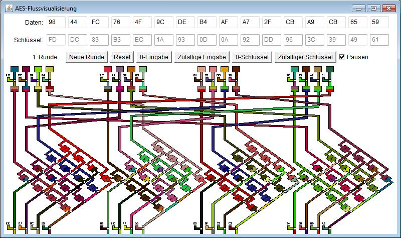

Die AES-Flussvisualisierung stellt farblich dar, wie sich die Daten während der einzelnen Runden der AES-Verschlüsselung ändern. Gezeigt wird dies in der AES128-Variante mit 10 Runden, wo sowohl Daten als auch Schlüssel jeweils aus einem 16-Byte-Block (128 Bit) bestehen.
Jedes Byte des 16-Byte-Datenblocks ist durch einen Farbstrom dargestellt. Die Farbe spiegelt den aktuellen Wert wider (durch direkte Ableitung der RGB-Werte aus dem Zahlenwert des Bytes – siehe http://de.wikipedia.org/wiki/RGB-Farbraum). So kann man leicht verfolgen, wie selbst ein Datenblock aus lauter Nullen selbst bei einem Schlüssel aus lauter Nullen sehr schnell "bunt" wird.

Bedienung:
Sie können jedes Byte von Hand eingeben – sowohl für den 16-Byte-Datenblock als auch für den 16-Byte-Schlüsselblock.
Die Buttons darunter erlauben es, entweder Nullen oder zufällige Hexwerte für den Datenblock oder für den Schlüssel einzugeben. Der Reset-Button fängt mit den aktuellen Hexwerten noch einmal bei der ersten Runde an.
Durch einen Klick auf den Button Berechnung (ganz links in der Reihe) wird die Visualisierung im unteren Bereich gestartet. Dort wird jeweils eine Runde von AES auf dem Bildschirm angezeigt (leider kann man nicht durch alle 10 Runden scrollen, es wird in der gegenwärtigen Implementierung immer nur eine Runde angezeigt und gespeichert).
Wie selbstständig die Visualisierung abläuft, lässt sich mit der Checkbox Pausen rechts außen steuern:
Pro Runde werden folgende Schritte visualisiert:
Eine genauere Beschreibung der einzelnen Schritte sowie weitere Dokumentation finden Sie unter: